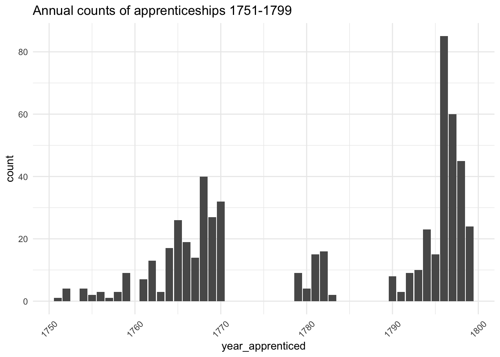
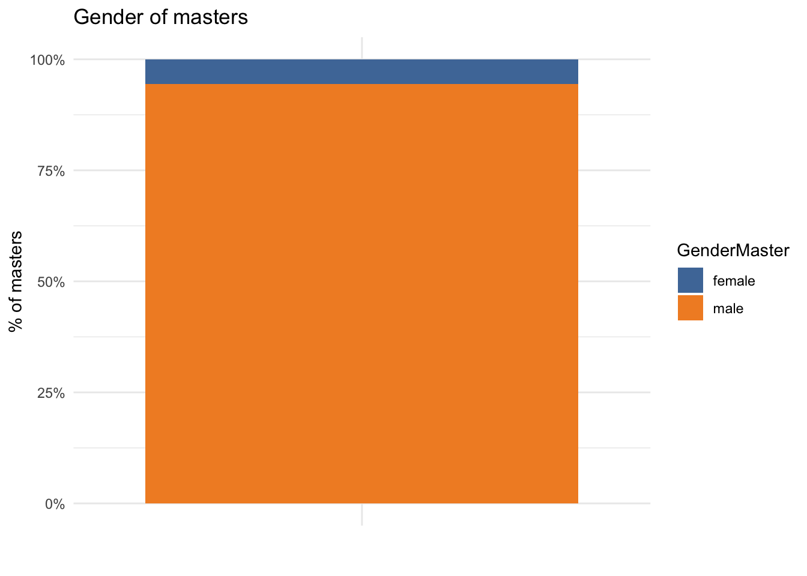
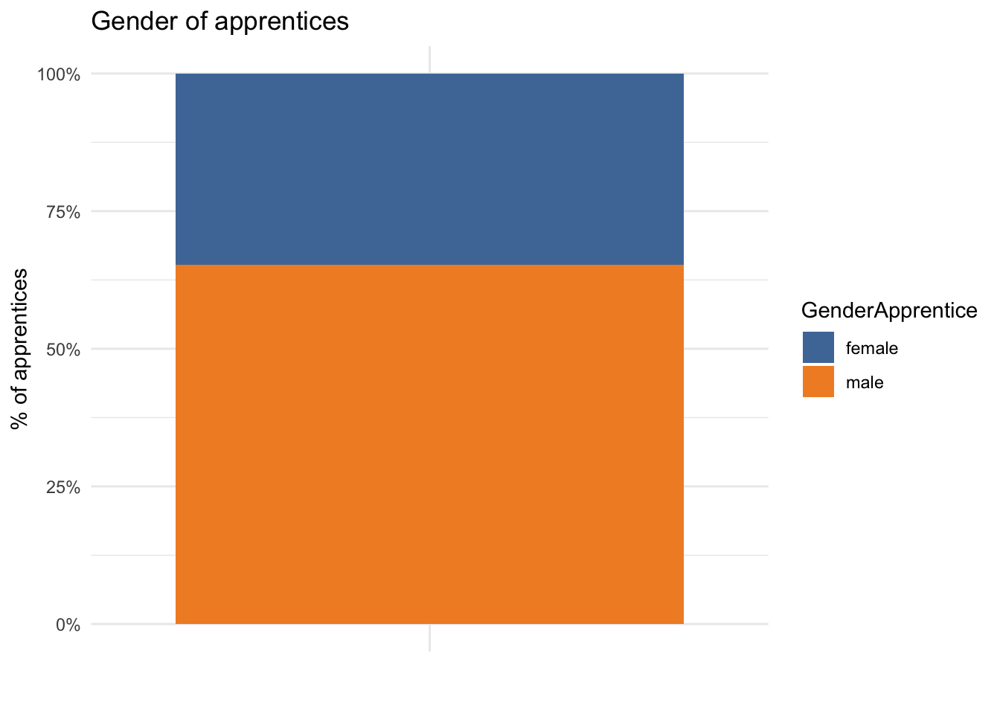
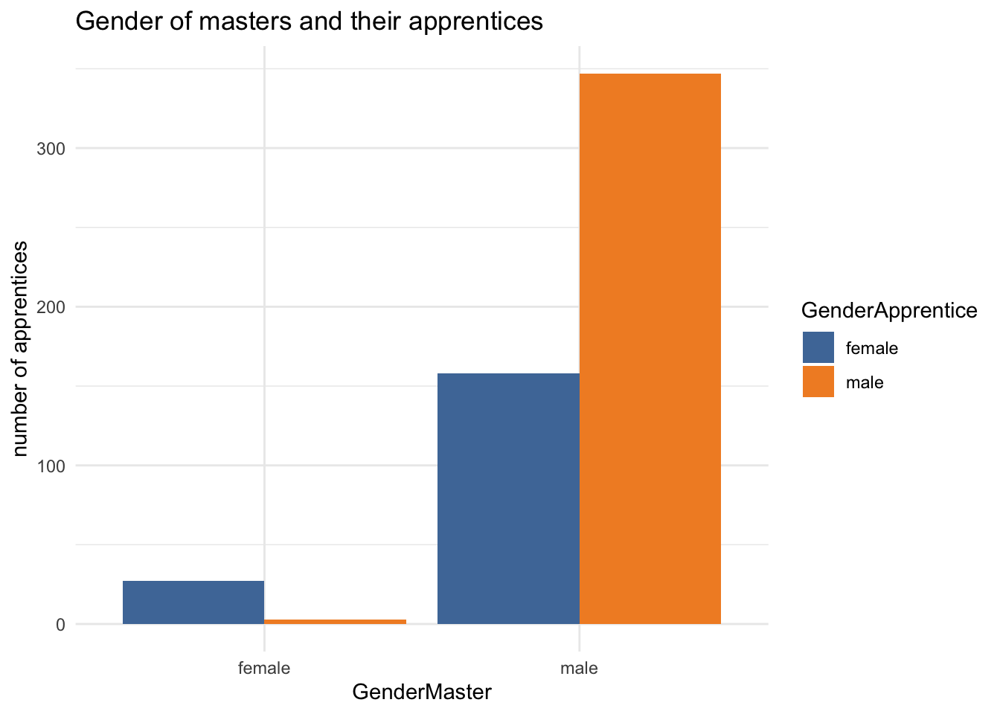
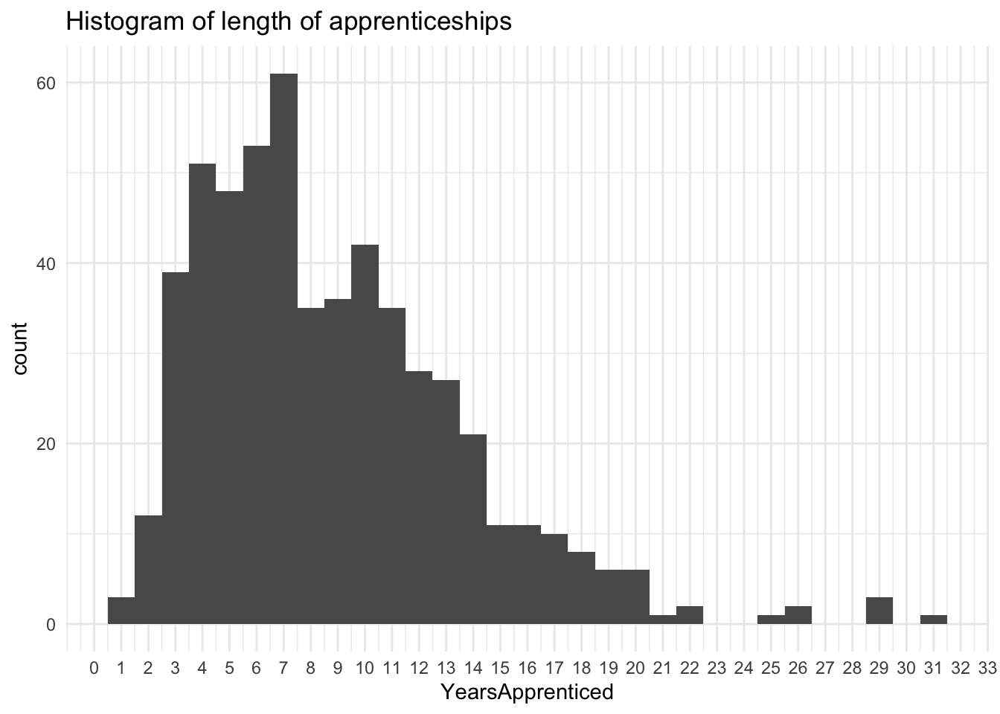
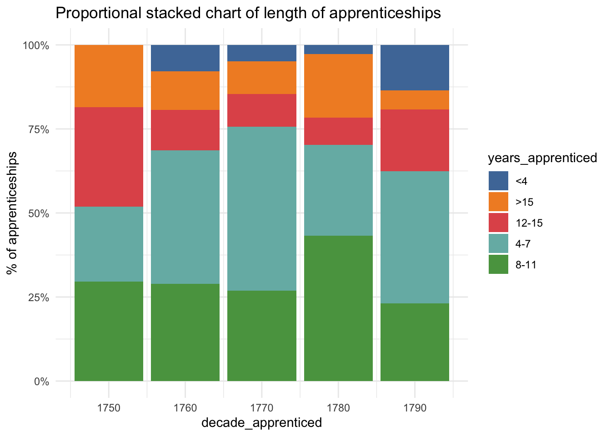
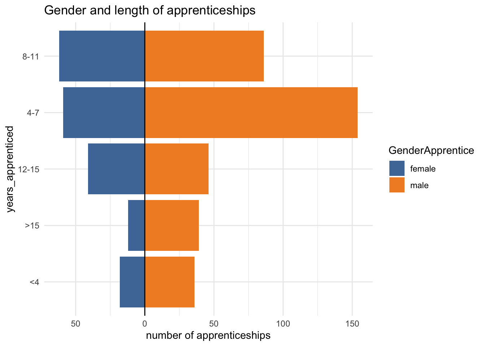
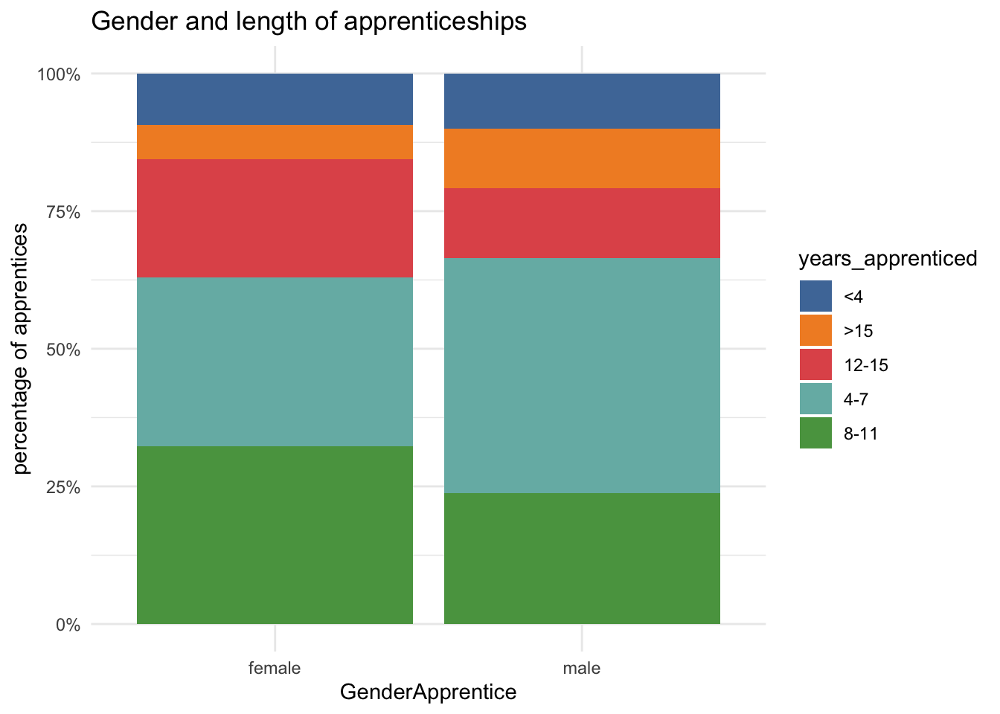
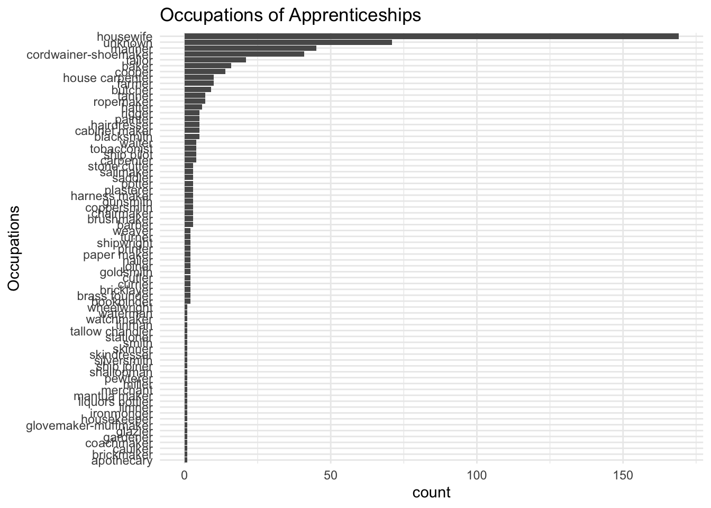
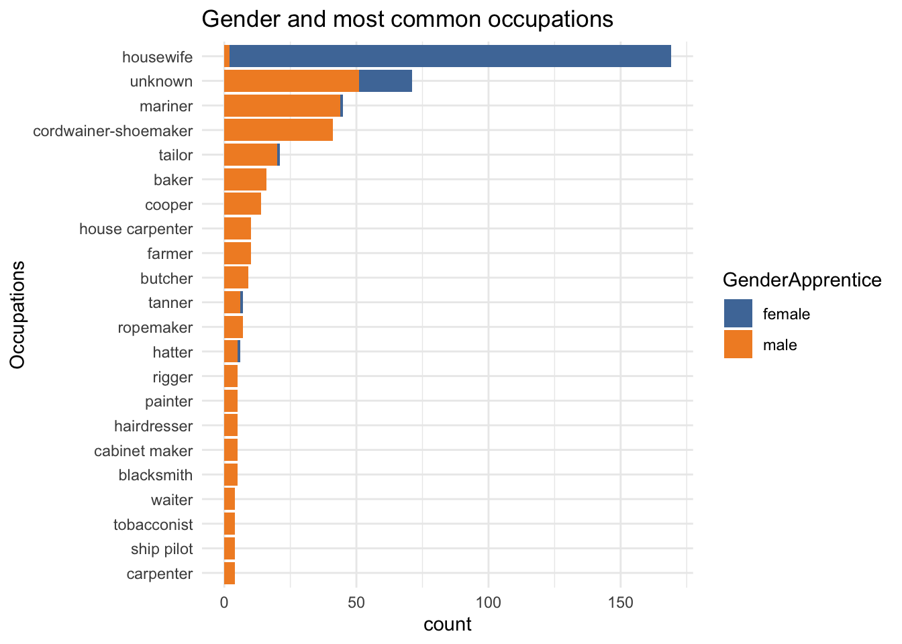

| year_apprenticed | decade_apprenticed | YearsApprenticed | GenderApprentice | GenderMaster | Occupation |
|---|---|---|---|---|---|
| 1768 | 1760 | 21 | male | male | weaver |
| 1768 | 1760 | 4 | male | male | unknown |
| 1768 | 1760 | 5 | female | female | housewife |
| 1769 | 1760 | 4 | male | male | unknown |
| 1770 | 1770 | 6 | male | male | mariner |
| 1781 | 1780 | 9 | female | male | housewife |
| 1795 | 1790 | 6 | male | male | currier |
| 1796 | 1790 | 14 | male | male | hairdresser |
| 1796 | 1790 | 7 | male | male | hairdresser |
| 1796 | 1790 | 4 | female | male | housewife |
MEAD Pauper Apprentices Philadelphia 1751-99
MEAD
apprentices
Introduction
This post takes a look at an open dataset available through the University of Pennsylvania’s open access repository. The dataset, Indentures and Apprentices made by Philadelphia Overseers of the Poor, 1751-1799 (created by Billy G. Smith), is one of an interesting collection of datasets on 18th- and 19th-century history which I may return to in the future.
These are the indentures of apprentices of people (mostly children) in the Philadelphia Almshouse 1751-97. It includes everyone apprenticed to a master in Philadelphia or one of its suburbs – the Northern Liberties or Southwark.
Pauper (or parish) apprenticeship was used by parishes (well into the 19th century in England) to reduce the burden on parish poor rates by apprenticing out paupers’ children. I’ve worked on a project that digitised similar records for 18th-century London, so this is for me interesting for comparisons with the same system in north America.
It contains a number of variables we can easily explore and visualise:
- year of apprenticeship
- years apprenticed
- apprentice gender
- it doesn’t contain the gender of masters, but does give their first names, so I’ve used 19th-century US Census data to add this information
- occupations to which the children were apprenticed (recorded as codes in the dataset, with an accompanying lookup table for occupation names)
I’m going to focus on bar charts for this post. Even though they’re very familiar, they can be used in a number of ways for different effects.
First views
Here’s a small slice of the data.
The first thing to look at is the chronological distribution. This appears remarkably uneven. At first sight, I wonder why there was apparently so much demand for pauper apprentices in the 1760s and later 1790s. But it could mean there are gaps in the records, so I’d need to find out more about the archives. For now let’s press on, since this is an exploratory analysis, but this needs to be borne in mind.

Gender of apprentices and masters
The majority of both apprentices and masters are male. 34.7% of apprentices are girls, and just 5.4% of masters are female.
The very low representation of women may in some ways be slightly misleading. As legal contracts, the legal doctrine of coverture would mean that generally married women wouldn’t enter into them alone. Although there were exceptions to this, it means that wives are under-represented even if in terms of actual work and training, it’s very likely that the ‘real’ masters of girl apprentices were not usually the men who signed the indentures.

Even though female apprentices are in the minority, their numbers highlight how pauper apprenticeship differed from guild apprenticeships with which people are probably more familiar. For example, in the online database of London livery companies 1400-1900, 3691 of apprenticeships were female and 297040 male - just 1.24% were girls. In contrast, in a sample database more than 40% of London’s 18th-century pauper apprentices were female. So this Philadelphia data looks quite similar in that respect.

In a further gender dimension, nearly all the female masters in the data employed girl apprentices. Only 3 boys were apprenticed to women.

Years apprenticed
The variation in duration of apprenticeships is striking. The standard length of a craft apprenticeship in England was 7 years (I don’t know if this was also the case in Pennsylvania) and this is the most common apprenticeship term in the dataset. But again, pauper apprenticeships differed from their guild counterparts. It was more usual for parish apprentices to be apprenticed until the age of 21, and they could be as young as 7 when apprenticed, so the actual term of an apprenticeship could vary, and around 14 years is quite possible. But even so, the apprenticeships of 20 years or more are surprising. Unfortunately, this data doesn’t include the apprentices’ ages, which would have been helpful here.

I wondered if apprenticeship terms changed over the half century of the data, so I grouped them into 5 categories and by decade. (Bearing in mind that the numbers are much smaller for the 1750s, 70s and 80s.) I don’t see any pattern there, but sometimes you just have to try things out even if the result is “meh”.

However, I did get something more interesting by comparing apprenticeship terms for girls and boys. I like this type of “diverging” bar chart for comparing two groups - I think it can enable broad comparisons while retaining a sense of differences in scale. In this case, you can see clearly that the overall distribution for boys and girls is different - there is a much higher proportion of boys’ apprenticeships in the 4-7 year category.
Perhaps this suggests that, even though they’re pauper apprenticeships, there was some tendency for boys to be placed in apprenticeships that to some extent resembled the traditional craft apprenticeship. Of the children apprenticed for 7 years, only 27.87% were girls, quite a bit lower than the percentage of girls overall.

This stacked bar chart shows the proportions with more precision. It confirms the difference for the 4-7 year category, but also shows that girls made up ground in slightly longer apprenticeships, so over 4-11 year terms, the majority, it largely evens out. Girls are slightly more likely to be apprenticed for 12 years or more, but there’s not much in it.
Another possibility is that girls were being apprenticed at a younger age than boys, and so (if apprenticeships to the age of 21 were common) they’d tend to be apprenticed for longer. Again, though, this can’t be tested because we don’t have the apprentices’ ages.

Occupations
There are 73 different occupations in the dataset. This bar chart (ordered to show most frequent to least) is too cramped to show much clearly, but highlights at least a couple of things. There’s quite a long tail of occupations that appear only once or twice; really, for further analysis this data would need grouping into broader categories. There is also a large number of “unknowns”.
Moreover, although occupations haven’t been formally categorised, it looks as though they aren’t verbatim transcriptions of the original documents either; as noted, they were coded in the dataset, and without further investigation it isn’t clear exactly how the coding was created or used. People who made footwear could be described in a number of ways (shoemaker, cordwainer, cobbler, and even corviser (Latin)), and it seems these have been consolidated into one form here. “Housewife” seems slightly curious; I don’t think I’ve ever seen it used as an occupation or status in English documents, so I’d want to know more about this.

For clarity and convenience, I limit the view to occupations which are listed at least 4 times. While I’d expect some divergence, I’m surprised that almost all the girls have been coded as ‘housewife’. It confirms that I need to find out more about the data before I can draw further conclusions!

Afterthoughts
It’s cool when you find open history data that’s relevant to your own research interests. But sometimes it can be a bit frustrating too (this is not a criticism of data creators). Whether because of absences in the original records or other researchers’ different priorities, it may not always contain all the information you’d like. Sometimes the processes that went into creating the data are unclear (less of a problem if you have contact information). Also, even though they may seem at first sight similar to records and data you know well, there are likely to be surprises and questions raised that show you can’t assume close similarities.
But even so, the exercise is likely to be thought-provoking and teach you something new. Even if you decide you can’t use the data directly, it can give you new ideas for your own research. And the contrasting or parallel experiences may well turn out to add a valuable extra dimension to your work.
Further reading and resources
Original dataset: Smith, Billy G., “INDENTURES & Apprentices MADE BY Philadelphia OVERSEERS OF THE POOR, 1751-1799”, Philadelphia, PA: McNeil Center for Early American Studies [distributor], 2015.
Alysa Levene, Parish apprenticeship and the old poor law in London
Billy G Smith, The “Lower Sort”: Philadelphia’s Laboring People, 1750-1800
Inspirations and provocations for bar charts:
- bring on the bar chart
- The case against diverging stacked bars (a slightly different type of diverging bar chart, but still an interesting read)